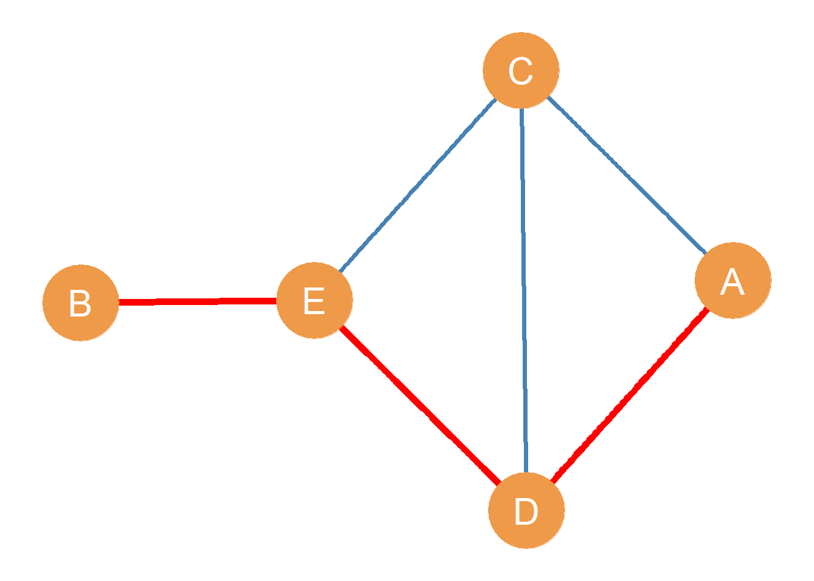
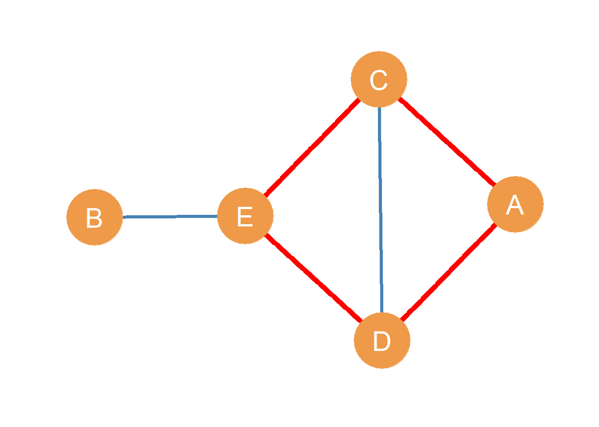
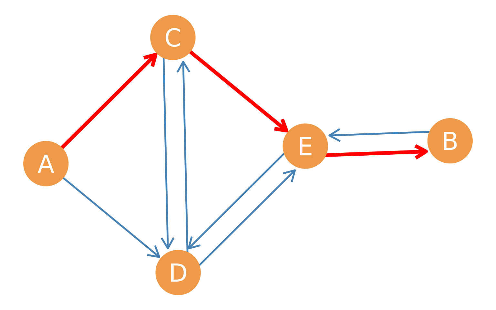
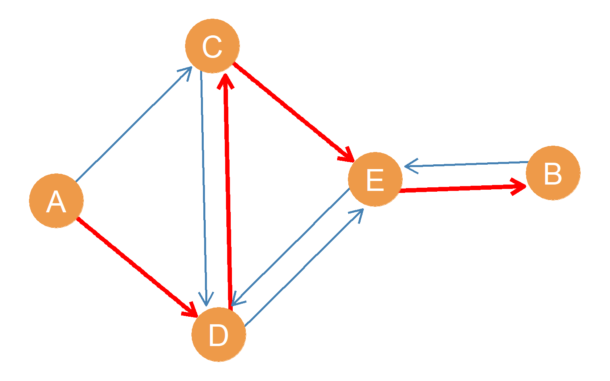
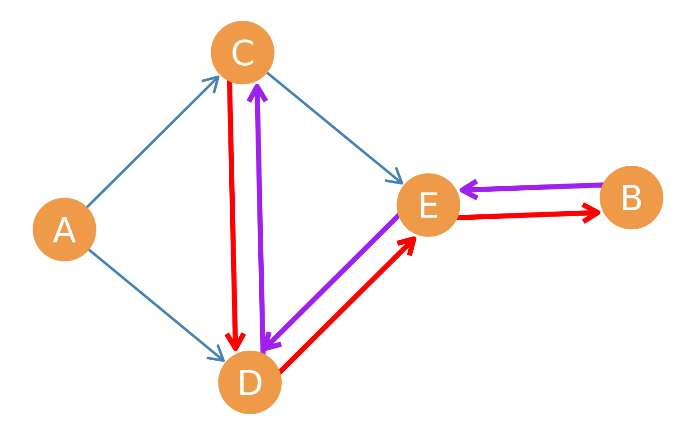
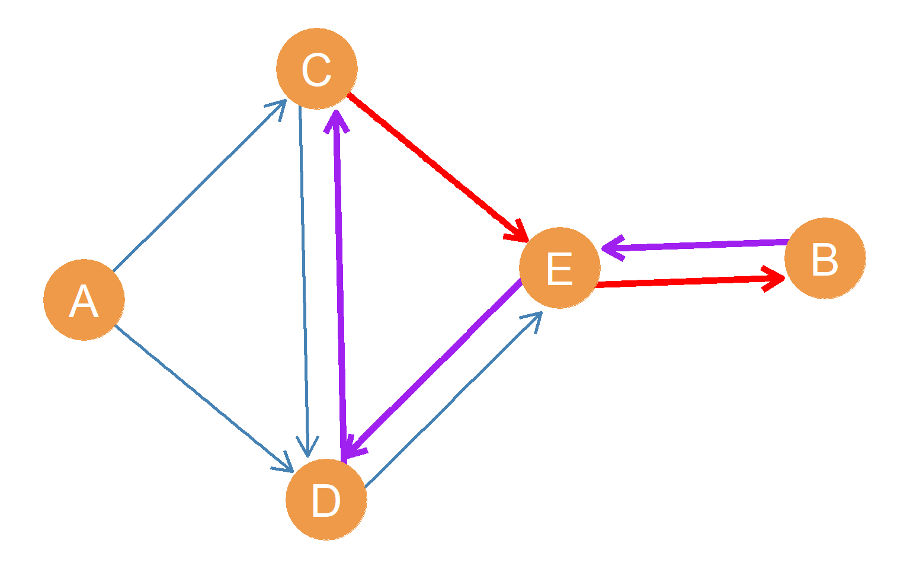
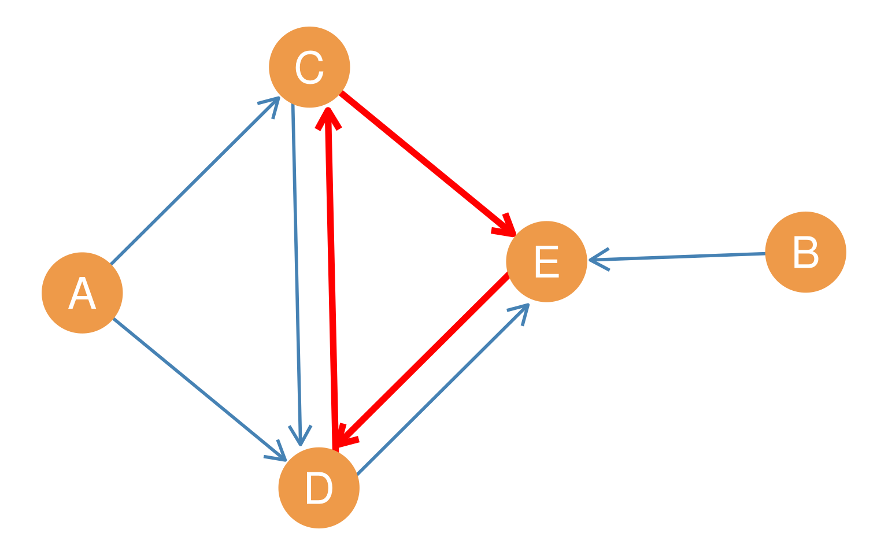
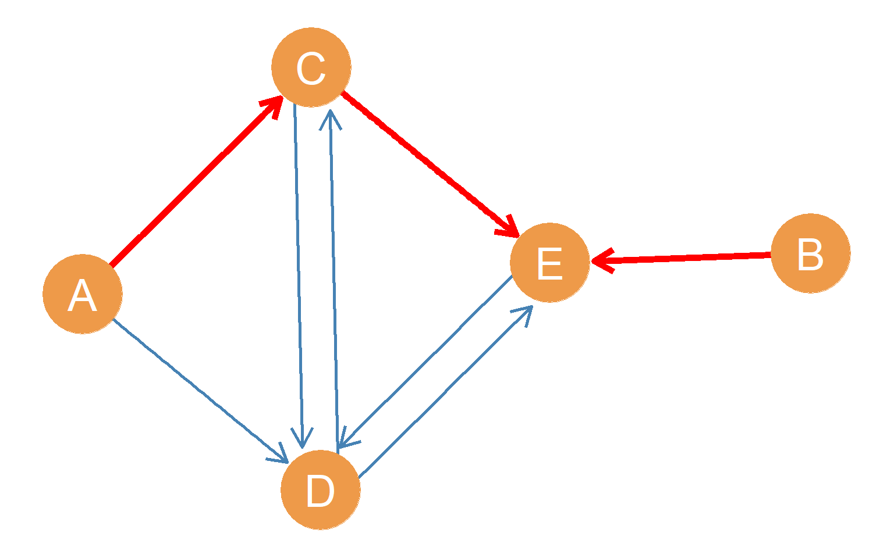

11 Indirect Connections
Yes, you have friends. But your friends also have friends (and those people also have friends…). This means that, sometimes, when representing concatenated social relationships in networks as graphs, we are not only interested in the direct connections between adjacent nodes. Instead, we are interested in indirect connections between nodes. That is, in some settings, it is important to note not just who your friends are, but also who the friends of your friends are, or even the friends of your friends, of your friends (and so on).
These types of indirect relationships are behind the (now) popular idea of six degrees of separation. This is the widely held belief that if we follow a sequence of people and social ties, at the fifth or sixth step, we may end up connected to a prominent or famous person (like Kevin Bacon). This is also the same idea behind the small world phenomenon popularized by psychologist Stanley Milgram in the 1960s (Milgram 1967), as when two strangers meet at an airport and realize that they have an acquaintance in common (“such a small world!”). The idea is that while they were not previously connected in the network, they were indirectly connected via a common contact without realizing it. After reading this lesson, you’ll be able to say something more specific: Two people who meet at the airport and realize that they have a common acquaintance were connected via a path of length two without knowing it.

As this bit of jargon indicates, graph theory can help us understand these indirect relationships in social networks. To do that, we must define a couple of concepts: the idea of a path and connectivity between two nodes.
11.1 Paths
What is a path? The best way to begin is with an example. Take, for instance, the undirected graph shown in Figure 11.1. In the Figure, nodes A and B are not adjacent (they form a null dyad). However, A can still reach B using a graph-theoretic path, written \(A-B\). For instance, if A wanted to pass along a message to B without it having to go through the same person twice, they could tell D (using the edge \(A \leftrightarrow D\)), who could tell E (using the edge \(D \leftrightarrow E\)) who could then tell B (using the \(E \leftrightarrow B\) edge). As noted above, this sequence of edges, namely \(A \leftrightarrow D, D \leftrightarrow E, E \leftrightarrow B\), defines a path between nodes A and B.
To define a path, we could also write the names of the edges separated by commas while omitting the arrows as in: \(A-B = \{AD, DE, EB\}\). In a path, the first node in the sequence is called the origin node, and the last node is called the destination node. The nodes “in between” the origin and destination nodes in the path are called the inner nodes. Together, the origin and destination nodes are referred to as the end nodes of the path. So in the path \(A-B = \{AD, DE, EB\}\), node A is the origin node, node B is the destination node, nodes D and E are the inner nodes, and both nodes A and B are the end nodes.
So what is a path?
In a graph, a path between two nodes A and B is a sequence of nodes and edges, such that the sequence begins with node A and ends with node B and only goes through each of the inner nodes in the path once.
Note that every path is actually a subgraph of the original graph as defined in Section 6.9! Except that the subgraph that defines a path will always contain a sequence of vertices and edges connected in a line.
11.2 Properties of Paths
In graph theory, paths between pairs of nodes have some unique properties:
- First, as mentioned in the definition, paths do not repeat nodes. This means that each of the inner nodes in the path (e.g., the nodes that are not the origin and destination ones) only appears exactly twice when we list the edges that make up the path, like nodes D and E in the AB in the path listing \((AD, DE, EB)\). The origin and destination nodes, in contrast, appear exactly once.1
- Second, while it might not seem immediately obvious, because paths do not repeat nodes, they also do not repeat edges. As we will see later, this property helps distinguish paths from other, less restricted types of edge sequences that we may define in a graph with two nodes at its ends.
- Third, paths are characterized by their length. The length of a path (\(\mathcal{l}_{ij}\), where \(i\) is the origin node and \(j\) is the destination node) is given by the number of edges included in it. So the length of the path \((AD, DE, EB)\) is \(\mathcal{l}_{AB} = 3\) because there are three edges in the path.2
- Finally, there may be multiple paths connecting the same pair of nodes. For instance, In Figure 11.1 node A can also reach node B via the path \((AC, CE, EB)\), which is distinct from the one shown in red in the Figure, but which also counts as a proper graph theoretic path (intervening nodes only appear twice in the listing, and the end nodes only appear once).
11.3 Pairwise Connectivity and Reachability
This leads us to the graph theory definition of connectivity for pairs of nodes:
In a graph, two nodes A and B are connected if there is at least one path (of any length), featuring node A as the origin node and node B as the destination node. Otherwise, the two nodes A and B are disconnected.
When a node can indirectly connect to another node via a path, we say that the origin node can reach the destination node, or that the destination node is reachable by the origin node.
Note that once we understand the graph theory notion of connectivity, it becomes clear that the concept of adjacency (see Chapter 6) is a special (limiting) case of connectivity: Two nodes i and j are adjacent when there is a path of \(\mathcal{l_{ij}} = 1\) between them! Another way to say this is that connectivity is a generalization of the notion of adjacency that allows paths of length greater than 1.
In a simple graph with no isolates, like that shown in Figure 11.1, it is easy to see that all node pairs are connected via a path of some length.
11.4 Shortest Paths
Consider the multiple ways node B can reach node C via a path in Figure 11.1. One possibility is the path defined by the edge sequence \((BE, ED, DA, AC)\). Another possibility is the path defined by the sequence \((BE, ED, DC)\). Yet another possibility is the path given by the edge sequence \((BE, EC)\). What’s the difference between these paths?
Well, for the first one, \(\mathcal{l}_{BC}^{(1)} = 4\), for the second one \(\mathcal{l}_{BC}^{(2)} = 3\) and for the last one \(\mathcal{l}_{BC}^{(3)} = 2\). The three paths are of different lengths, even though all three are proper graph-theoretic paths (they do not repeat inner nodes) and even though all three feature the same actors as the end nodes. Note that the length of the smallest possible shortest path between two non-adjacent vertices is always two!
Let’s say B was a spy who needed to send an urgent message to C even though they don’t know C directly. If B wanted the message to get to C in the fastest way, they would use the shortest path between them, which in this case is \((BE, EC)\). For any two nodes in the network, the shortest path is the smallest existing path (in terms of path length) that has those nodes as the end nodes. This means that for every pair of connected actors in the network, we can define a shortest path between them. The shortest paths between pairs of nodes are also called geodesics.
Sometimes, as with actors A and B in Figure 11.1, there will be multiple shortest paths between two pairs of nodes, because we end up with two or more paths that are “tied” in length (and thus all count as “shortest” paths). So for nodes A and B in Figure 11.1, the two shortest paths connecting them are of length three: \((AC, CE, EB)\) and \((AD, DE, EB)\).
11.4.1 Paths and Intermediation in Networks
Observe that, in Figure 11.1, if B really wanted to reach C via the shortest path, they would always have to go through node E. When this is the case, we say that E stands in the shortest path between B and C because it is an inner node in that path. So B is highly dependent on E to reach C. This makes E’s position in the network particularly important for B, because they play the role of go-between or broker between B and the other actors in the network (Marsden 1983).
Because of this connection to communication efficiency and intermediation, shortest paths figure prominently in various measures of node position, called centrality measures, which we will cover in the centrality lessons. One such measure, called betweenness centrality, is based on counting the number of shortest paths between every other pair of nodes that a given node stands on.
The length of the shortest path between two pairs of non-adjacent vertices in the network can be thought of as the “degrees of separation” between them. This is also called the geodesic distance between two nodes. For instance, the shortest path between nodes A and B is of length three, so A is three degrees of separation away from B. As we saw in this example, there need not be only one shortest path between two nodes. Actors in the network can be connected via multiple distinct shortest paths, as are A and B in Figure 11.1.
11.5 Cycles
Consider the edge sequence \((AD, DE, EC, CA)\) highlighted in red in Figure 11.2. What’s so special about it? Well, it looks like a path because the inner nodes are listed only twice, so all the edges are unique. However, both the origin and destination nodes are the same!
Something like this sometimes happens with gossip. You start a rumor about someone by telling somebody else, and then a third person tells you the rumor that you started, as if it were news to you! In this case, the rumor has traveled in the network via what is called a cycle.

A cycle is a path, of length three or larger, featuring the same node in both the origin and destination slots. In an undirected graph, cycles of length three are also called triangles or closed triads.
Some directed graphs are distinctive because they don’t have any cycles. It doesn’t matter how hard you try or how long you stare at them; there is no way you will find a directed path of length at least 3 that begins and ends at the same node.
Directed graphs that contain no cycles are called directed acyclic graphs (DAGs). Note that tree graphs are by definition graphs that do not contain cycles. Therefore, every tree graph is also a DAG.
11.6 Graph Properties Based on Paths and Cycles
Given what we have learned so far, we can characterize key properties of the whole graph depending on the range (minimum and maximum lengths) of the shortest paths and cycles between pairs of nodes in it, as well as the existence of given paths and cycles with special features:
- The length of the longest geodesic (shortest path) between two nodes in a graph is called the graph diameter.
- The length of the shortest geodesic (shortest path) between two nodes in a graph is called the graph radius.
- For graphs that are not acyclic (e.g., they contain at least one cycle), the length of the longest cycle is called the graph circumference (Buckley and Harary 1990, 10).
- In the same way, the length of the shortest cycle in a graph with cycles is called the graph girth (Buckley and Harary 1990, 10). For a graph with a single cycle, the circumference is always equal to the girth.
- A path that includes every node in a graph is called a Hamiltonian path (also called a spanning path). Obviously, not all graphs contain such a path; graphs that do are called traceable graphs.
- A cycle that visits each node in the graph exactly once is called a Hamiltonian cycle (also called a spanning cycle). Obviously, not all graphs will contain such a cycle. Graphs that do contain a Hamiltonian cycle are called (you guessed it) Hamiltonian graphs. [Hamiltonian paths, cycles, and graphs are named after the Irish Mathematician and Scientist William Rowan Hamilton.]
11.7 Walks and Trails
Not every sequence of nodes and edges that begins with one node and ends in another counts as a proper graph-theoretic path between two nodes.
For instance, looking at Figure 11.1, we could imagine a sequence of edges that started at one node and ended at another, without repeating edges but allowing repeated nodes. For instance, the sequence \((CA, AD, DC, CE, ED)\) has node C as the origin and node D as the destination, and all edges in the sequence are distinct. However, the origin node C and the destination node D also appear in the intervening chain, which means that they are listed three times. This fails the path test for this edge sequence. Sequences like this, featuring all unique edges but repeated nodes, are called trails.
In the same way, we could imagine a message traveling along the edge sequence \((AD, DC, CE, ED, DC, EC, EB)\). This sequence has A as the origin node and has B as the destination node. However, the sequence goes through nodes C, D, and E twice; moreover, the edge DC appears twice, as does the edge EC. This means nodes C, D, and E appear four times in the listing, which also fails the “is this a path?” test.
Arbitrary sequences of nodes and edges that begin with one node and end in another node, but that feature both repeated nodes and edges along the way, are called walks. If a walk begins and ends in the same node (like a cycle) then it is called a closed walk, otherwise, if a walk has different source and destination nodes, it is called an open walk (Buckley and Harary 1990, 10). The same distinction applies to trails. A closed trail (sometimes called a circuit) is a trail that begins and ends at the same node; unlike a cycle, it is permitted to repeat intermediate nodes as long as no edges are repeated.
Walks, trails, and paths form a hierarchy of increasingly less restricted “travels” from one node to another via edges in a graph (Borgatti 2005). Walks are the least restricted (they can include both repeated nodes and edges), and paths are the most restricted (they cannot include repeated nodes, which by implication also means they can’t include repeated links). Trails are in between. They are forbidden from repeating edges, but can use multiple nodes more than once.
This means all paths are trails, and all trails are walks, but not all walks are trails, and not all trails are paths!
11.7.1 Keeping Walks and Trails Apart
One way to keep these distinctions straight is by thinking about different types of things that flow through a network and how they may use paths, trails, or walks (Borgatti 2005). Take, for instance, a virus like our (in)famous friend, COVID-19. A virus doesn’t decide where to go. It just gets transmitted from person to person whenever pairs of people (or multiple pairs if it’s a mass gathering) come into contact. The same person can become exposed to the virus multiple times via different links (so the chain repeats nodes). In the same way, the same link (your best friend) can expose you to the virus multiple times (so the chain repeats edges).
These considerations lead us to conclude that viruses form transmission chains in social networks that look like walks: they repeat both nodes and edges. In this way, viruses are very much like (good old-fashioned paper and coin) money even though you may not have thought of that connection before. If you buy something with a dollar, and the person you gave the dollar to buys something with it, the dollar can come back to you after flowing through the network for a while. Money also travels through networks via walks because it can repeat both nodes and edges.
11.7.2 Milgram’s Small World Experiment
How about trails? We already mentioned the idea of “six degrees of separation.” In the 1960s, the social psychologist Stanley Milgram designed an experiment in which he sent almost 200 packages containing a letter to a group of random people in Nebraska. The letter had the name of a stockbroker who lived in Boston and instructions that read: “If you know this person and where they live, send them this package; if you don’t know this person, forward it to someone you know who you think might know this person.” This is called the small world experiment. The point of the experiment was to figure out how many packages reached their intended destination (if any).
The letters in Milgram’s experiment thus began to flow through indirect connections in social networks. Any one “chain” of letters, however, would go from one link in the network to another. Theoretically, it could come back to the person who had already sent the letter (if someone further in the chain didn’t know that person had sent it before), but no one would forward it back to the same person they had forwarded it to before. This means that the packages in the small-world experiment traveled along trails. They could repeat nodes (e.g., people) but not edges.
Gossip spreads through the network via trails, too. You can hear the same piece of gossip from different friends (meaning that you are a repeated node in the trail), but you won’t hear the same piece of gossip from the same friend (meaning that edges are not repeated), unless they have memory loss!
So the differences between the ways viruses and gossip travel via social networks should help you keep walks and trails apart.
References
11.8 Directed Indirect Connections
What if the relationship we are studying is not symmetric, like a similarity or a co-location, but it is asymmetric, like an interaction or an exchange (e.g., communication or advice), and we need to represent the resulting network using a directed graph? How do indirect connections work in the directed case? Well, it’s just like in the undirected case we saw in Chapter 11, but with a couple of differences.
First, we have to respect the direction of the path (follow the arrows).
Second, just like asymmetric ties in directed graphs, directed paths can be non-reciprocal.
That is, there can be a directed path between two nodes \(A\) and \(B\) where \(A\) is the origin node and \(B\) is the destination node, but that does not mean that there is a directed path going from \(B\) to \(A\), with \(B\) as the origin and \(A\) as the destination node.

Figure 11.3 illustrates this situation. The highlighted red path goes from origin node \(A\) to destination node \(B\). However, note that if we were to start with node \(B\) and try to get a message or a package to node \(A\), there is no way we could do it by a path of any length in this graph, as long as we are forced to follow the direction of the arrows.
That means that while node \(A\) can reach node \(B\) by a directed shortest path of \(l_{AB} = 3\), node \(B\) cannot reach node \(A\) (\(l_{BA} = \infty\)). The reachability relation in directed graphs is therefore asymmetric.

This also highlights another difference between undirected and directed graphs regarding reachability. In the undirected case, as we will see in a future lesson, the only way that a node cannot be reachable from other nodes in the graph is for the graph to be disconnected. In the directed case, a graph can be fully connected while some nodes are still incapable of reaching others.
Note that, as before, there can be multiple directed paths of a given length connecting two nodes. In the case of \(A\) and \(B\), there is at least one other path of length 3 with origin node \(A\) and destination node \(B\). Can you see it?

Also, like we saw in the lesson on paths, there can be directed paths of different lengths connecting pairs of nodes. For instance, Figure 11.4 shows a highlighted red path of length \(l_{AB} = 4\) with origin node \(A\) and destination node \(B\) and edges \((AD, DC, CE, EB)\). In the case of \(A\) and \(B\), there is at least one other path of length 4 with origin node \(A\) and destination node \(B\). Can you see it?

11.9 Mutual Reachability
In directed graphs, some pairs of nodes can be mutually reachable. That is, there can be a directed path going from one node to the other, and vice versa. Figure 11.5 shows an example of this case involving nodes \(B\) and \(C\). Starting with origin node \(B\), we can get to \(C\) via the highlighted purple path of length \(l_{BC} = 3\) formed by the edges \((BE, ED, DC)\). In the same way, starting with node \(C\), we can get to node \(B\) via the separate, highlighted red path of length \(l_{CB} = 3\) formed by the edges \((CD, DE, EB)\).
For mutual reachability between two nodes to happen in a directed graph, the two paths do not have to be the same length; in fact, in the case of nodes \(B\) and \(C\), node \(C\) can reach \(B\) via a path shorter than length 3. This is shown in Figure 11.6, where we can see that \(C\) can reach \(B\) via the shortest path possible short of being directly connected \((l_{CB} = 2)\), formed by the edges \((CE, EB)\) (highlighted in red). On the other hand, \(B\) cannot reach \(C\) via a path of length less than 3.

11.10 Directed Cycles
Just like in the undirected case, a directed path that begins and ends with the same node is called a directed cycle. We refer to different cycles by the number of directed edges they include. For instance, a 3-directed cycle is a directed cycle with three directed edges, a 4-directed cycle is a directed cycle with four edges, and so forth. For instance, in Figure 11.7, the directed 3-cycle with node \(C\) as both the origin and destination, involving the directed edges \((CE, ED, DC)\), is highlighted in red.
A directed graph that contains no cycles is a special kind of directed graph (composed of antisymmetric ties) called a directed acyclic graph.

11.11 Types of Indirect Connections in Directed Graphs
In a directed graph, when pairs of nodes are mutually reachable, they are also said to be strongly connected. Otherwise, if nodes in a directed graph are connected via at least one directed path that only goes in one direction (like nodes A and B in Figure 11.5), they are said to be unilaterally connected. Two nodes are said to be recursively connected when they are strongly connected and and at least one of the pairs of directed paths going in both directions use the same nodes (like paths \((BE, ED, DC)\) and \((CD, DE, EB)\) connecting nodes B and C in Figure 11.5)).
Finally, in a directed graph, two nodes are weakly connected if we can trace a path from one to the other, but only by ignoring the direction of the arrows! For instance, Figure 11.8 shows a directed graph in which nodes A and B have a weak connection via the \((BE, CE, AC)\) path (highlighted in red), although this is not the only weak connection they share.
Can you trace other weakly connected paths between nodes A and B in Figure 11.8)?
That means that we can check whether an edge sequence is a path by seeing if the inner nodes appear more than twice in the edge list (in which case, it is not path), or whether the end nodes appear more than once in the edge list (in which case, it is also not path).↩︎
So now you can tell your friends what “six degrees of separation” means in graph theory terms. If you can trace a path of \(\mathcal{l} = 6\) with you as the origin node, and at the other end there stands Kevin Bacon, then you are six degrees of separation from him↩︎